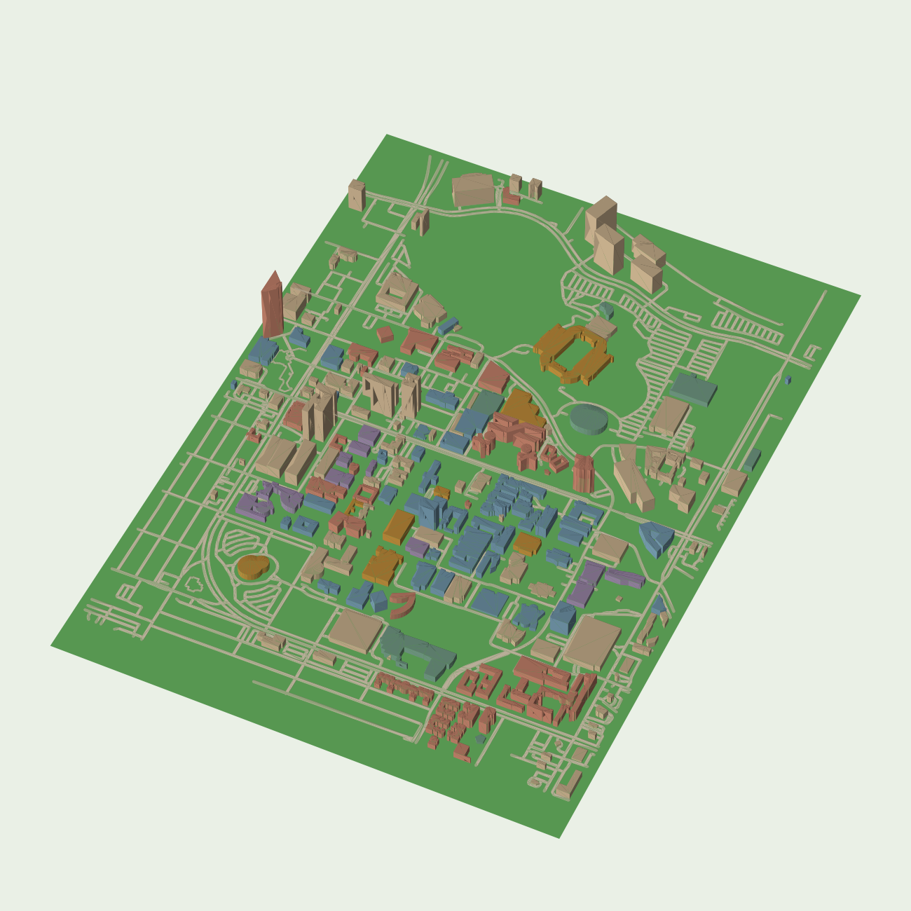

252 named building footprints from OpenStreetMap, with mapped heights, floor-count estimates, or defaults. Flat terrain and simplified roofs. The 402 unnamed building footprints have been removed from the viewer and STL.
867 trees use mapped tree locations, with stylized canopies. Colors are illustrative. The grid is 100 meters per square in the model’s local projection.
Horizontal scale 1:10,000; heights exaggerated 2×. Import STL as millimeters. Labels, grid, and trees are viewer overlays; STL retains the filtered campus geometry. Use the textured GLB for building colors and roof finishes. Walls use solid colors; roof finishes are procedural illustrations, not surveyed replicas.
Walking routes use the October 24, 2026 OpenStreetMap path snapshot. Walking time assumes 75 meters per minute. Dashed endpoint links are estimated connections to nearby mapped paths; they are not verified entrances. Routes may include stairs and do not account for current closures.
Independent study; not affiliated with or endorsed by ASU.